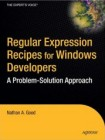

Buy Regular Expression Recipes for Windows Developers from Amazon.com
Buy Regular Expression Recipes for Windows Developers from Amazon.co.uk
When I saw the title of this book, I was excited at the prospect of a book filled with detailed regular expression examples. Unfortunately, it didn't pan out that way.
Spread over a whopping 359 pages, the book lists exactly 100 tasks that you can accomplish with a regular expression. As the solution, the author not only gives a regular expression, but also a complete source code snippet in C#, VB.NET, JavaScript and VBScript. Not all solutions have snippets in all languages. Some solutions also have a snippet for ASP.NET.
Obviously, the examples have a heavy bias towards Windows and .NET. If you're using open source languages, you may want to look at this book's precursor Regular Expression Recipies instead. It's essentially the same book, with almost the same list of recipes, but with examples in Perl, PHP and Python.
Each recipe also has a "how it works" section, essentially transcribing the regular expression in English, similar in approach to RegexBuddy's plain English regex trees, though the book uses a flat description rather than a tree. The descriptions are brief though. While all the source code snippets easily take up two or more pages per recipe, the explanation is often barely half a page long.
The book does suffer from some sloppy editing. The regular expression in the source code snippets isn't always identical to the one in the description. E.g. in recipe 6-21, the JavaScript snippet uses named capture, and the explanation then proceeds to explain a regex without named capture (which isn't supported by JavaScript). Most of these issues are trivial, but it isn't good for a book that's obviously aimed at beginners.
Most of the recipes solve rather basic problems, organized in six chapters. The first, "Words and Text", deals with finding blank lines, repeated words, words at the start or end of a line, etc. The "URLs and Paths" chapter has examples for finding URLs and file paths, and extracting bits from them. The "CSV and tab-delimited files" has a few recipes for converting between the two and extracting fields.
The "Formatting and Validating" chapter shows how to validate numbers, currency, dates, phone numbers, addresses, etc. The "XML and HTML" chapter has recipes for matching and replacing tags and attributes. Finally, the "Source Code" chapter has a bunch of recipes for manipulating software source code and related files. Most of these tasks are odd jobs that .NET programmers may want to do sometimes.
The book would have been a better deal if it had focused on regular expressions, and left out the many lines of source code, not to mention the redundant copies in several languages. Without the source code, a book of the same size could easily contain 300 examples. That would have made it far more useful for programmers who know how to program, but aren't well-versed in regular expressions.
As it is, I can only recommend this book to people who are not only new to regular expressions, but also relatively new to programming. The book does contain many recipes that solve basic problems you're likely to encounter when writing .NET applications or scripts for a web site. If you happen to use C#, VB.NET, JavaScript or VBScript, and are looking for a cookbook approach, you'll certainly find the book useful.
But don't expect to really learn how regular expressions work from this book. If you develop software for a living, you're better of with a good regular expression tutorial or a book like "Mastering Regular Expressions".
Buy Regular Expression Recipes for Windows Developers from Amazon.com
Buy Regular Expression Recipes for Windows Developers from Amazon.co.uk
Page URL: http://www.Regular-Expressions.info/bookrecipeswin.html
Last Updated: 21 October 2005
Copyright © 2003-2005 Jan Goyvaerts. All rights reserved.
| Books |
| Teach Yourself Regexp |
| Mastering Regular Expr. |
| Java Regular Expressions |
| Regular Expr. Recipes |
| Regex Recipes for Windows |
| Regex Reference |
| Basic Regex Syntax |
| Advanced Regex Syntax |
| Unicode-Specific Syntax |
| Flavor-Specific Syntax |
| More Information |
| Introduction |
| Quick Start |
| Tutorial |
| Tools and Languages |
| Examples |
| Books |
| Reference |
| About This Site |
| Download and Print |